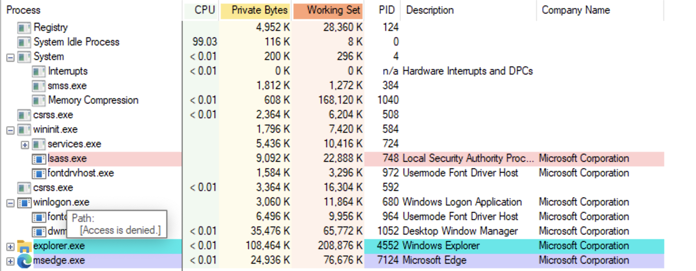

There are two broad categories of Windows core processes. Processes that initialize system environment and those that initialize the user environment. Whatever is the category, you need to know them well in order to detect abnormal things.
Main Processes
Below is the overview of the main processes in Windows. There are several core process that are important to examine since malware often drool 🤤 over them.

IDLE or System Idle Process
Parent 🤱: None.
Children 👧 : None
The first and the most importnat process that “gives birth” to other processes - IDLE. 🔍 It doesn’t have an image file on disk, so if you see IDLE.exe, it is most likely a malware 🦠 (or you have been sophisticatedly pranked 😉).
🔎 Are
IDLEandSystem Idle Processthe same thing?🧪 If I dump a process that doesn’t have an image file, will it still have a PE header?
Runs in system memory space.
System
Handles kernel mode system threads, different device drivers, waiting for I/O etc.
Runs in system memory space.
Memory Compression
Compresses the memory of the user space. Doesn’t have an image file on disk. Not really interesting for DFIR.
smss.exe
Session manager process. The first user-mode process. Run from System32 directory. There are two instances:
- master instance perfroms some init stuff. Reads and writes to registry preparing the OS for use. Initializes the registry hives
- session startup instance. Creates three subsystem processes and exits: csrss.exe,
winlogon
Another process of particilar interest is msc.
wininit
lsass
lsass. This is the main process of Windows OS that’s responsible for authentication and authorisation. More about lsass here.
svchost
svchost. 🦠 This one is very ofter used by malware for disguise. It has lot’s of instances.
The process tree now looks like this:
- IDLE
- System (PID 4).
- Memory Compression
Malware Identification
Name Mangling
There are several techniques applied to these core processes for persistence and escalation. The first one used quite often at least in the past, is to misspell the core process so that it would not be so obviously malicous. The most common target for that trick is svchost: scvhost, for example. Do you see the difference? Would you have noticed it at the first glance when reviewing the processes in the Task Manager?
Parent
On way to identify something malicious which is more obvious than name mangling is looking at the process parent.
Image File Path
⚠️ Some core process do not have an actual file on disk! Another way - to look at the path of the process. Most core processes run from System32 directory.
Processes that don’t have an image file on disk:
IDLEMemory compression
Processes run from System32:
smss.exe
Singleton
Singleton - one instance running only. One instance lsass, services, System, winint, lsm.exe ❓. If any of these having more than 1 process should be the object of further investigation.
Account
Check the account it being run from. The most commonly used are: local system account, network service account, local service account. If any of the core processes is run from a user account, it’s a possible sign of compromise.
Boot Time
Check the boot time.
References
[1] SDF Podcast, by Michael Leclair